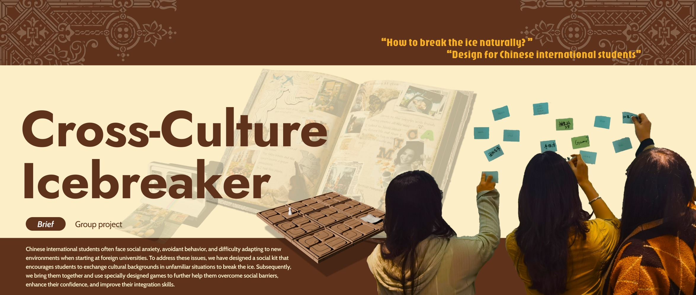
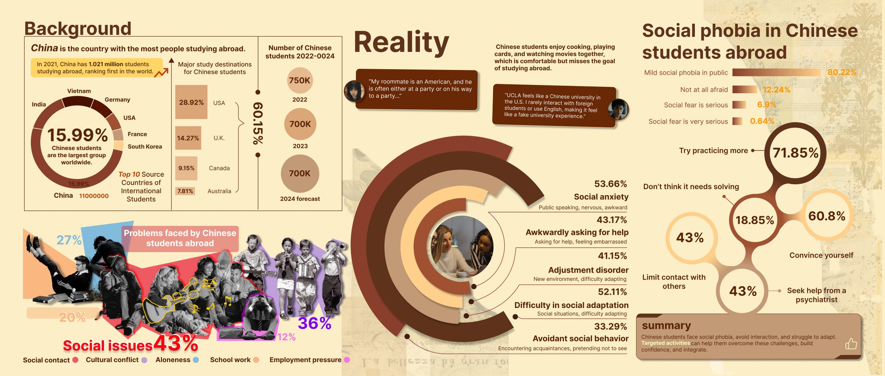
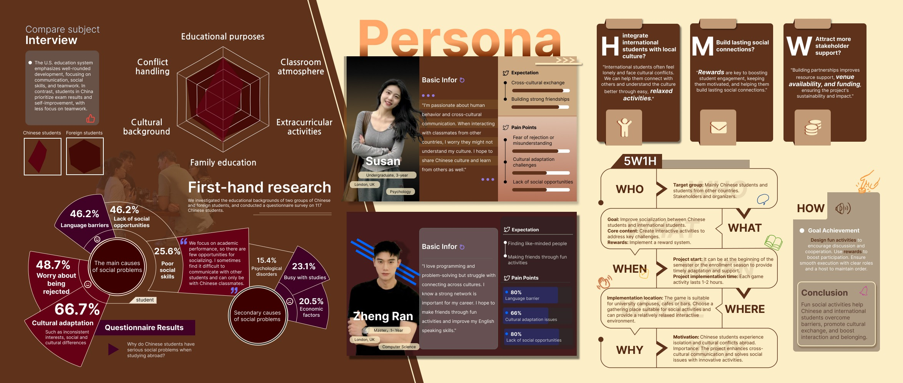
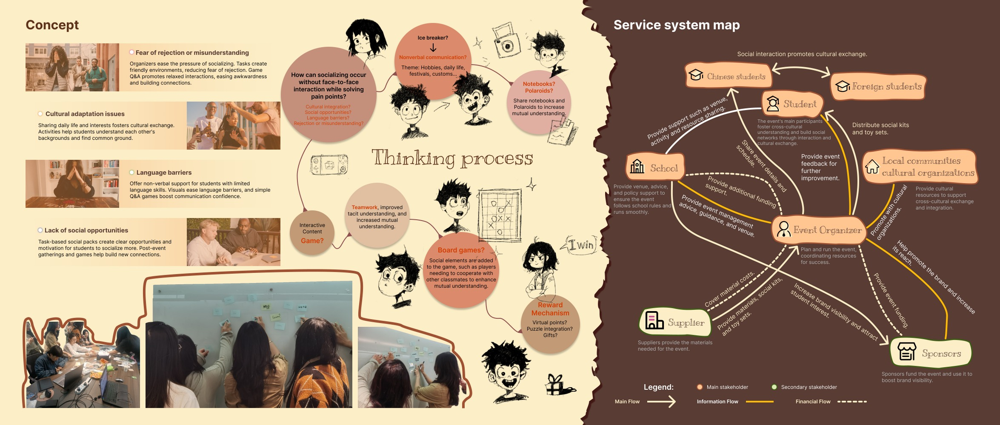
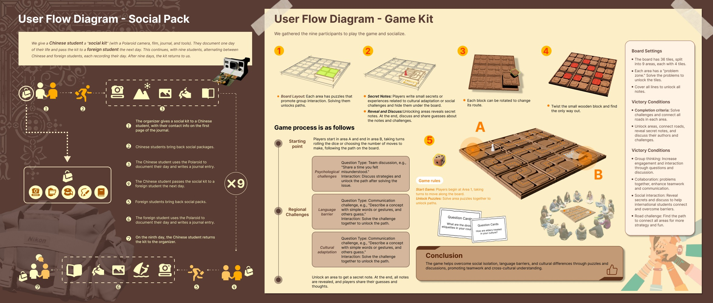
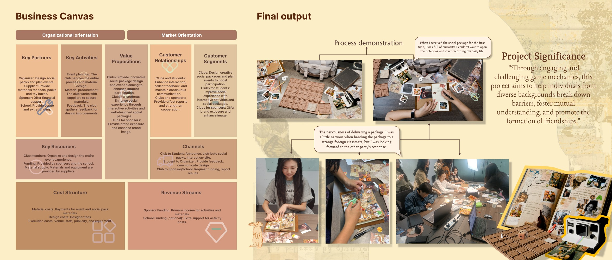

04 / Social design
Cross-Culture Icebreaker
A social pack and board-game experience helping Chinese international students exchange cultural backgrounds and build early connections.

Context
Chinese international students may face social anxiety, language barriers and limited low-pressure opportunities to connect.
Challenge
The project needed to break the ice naturally without forcing uncomfortable direct interaction.
Process
The team used survey data, personas, service mapping, social-pack flows and game mechanics.
Outcome
The outcome is a two-part social system: a rotating social pack and a collaborative board-game kit.
Page-by-page evidence
Complete Cross-Culture Icebreaker project archive
These pages show the user research, system logic, prototype and final demonstration.





What Cross-Culture Icebreaker demonstrates
Competencies
User research, questionnaire synthesis, personas, social design, service mapping, game mechanics and prototyping.
2-minute story
This project responds to social anxiety and cultural adaptation challenges through a social pack and board-game experience.
8-10 minute flow
Begin with student context, explain survey/personas, show indirect interaction insight, social pack, game kit, prototype evidence and next testing steps.
Need confirmation
Your exact group contribution, team size, duration, participant background and follow-up impact.